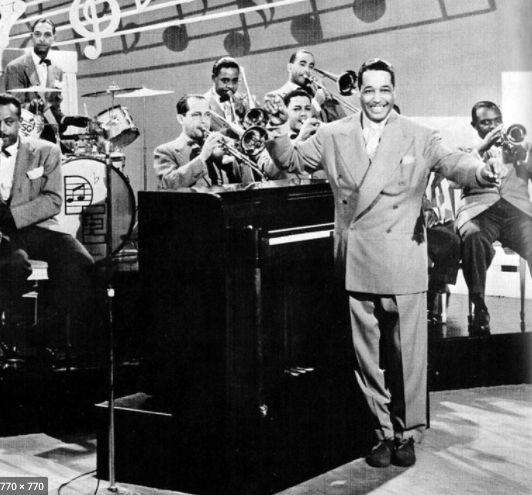

This is a story about Music
Favourite Albums and Songs

Intention
Justin Bieber
Album Introductions
i am > i was shatters the notion of 21 Savage as a specialist with a narrow purview and audience, and recasts him as a star in waiting, all without forcing him into unflattering contortions. It also cements him as a far more original stylist than other hopefuls from Atlanta, like Lil Baby and Gunna, who appear here together and sound simply like Young Thug disciples. At its best, the album is still weird, like when 21 raps earnestly over Santana, or when he ends with a Young Nudy duet that sounds for all the world like the third act of a Morricone western. That’s the song where 21 sneers at rappers who “drop a mixtape, then they tattoo their face.” It gets at the core idea of his work: You can’t.
Geography is the debut studio album by English musician Tom Misch. It was self-released on 6 April 2018 through Misch's own label Beyond the Groove.
Misch met Dayes at the launch party for his album, Geography in the summer of 2018, but Misch had been a fan of Dayes' work in the band Yussef Kamaal even before that. And strangely, Misch might have seen him play for the first time a decade and a half prior "I actually remember going to a talent show when I was like 7 or something," he recalls. "I remember going to a local school in my area and seeing this guy play drums — he was about 9 at the time. I remember thinking 'This guy's amazing at drums,' and then fast-forward 15 years, when I'm working on this record, I realize that guy was Yussef."
At the center of this whirlwind lies Changes, his first album in four years. On it, Bieber returns to us a wiser man—the emphasis, here, strenuously, on “man.” As of 2018, he is happily married to Hailey Bieber, née Baldwin, model and daughter of Stephen. Bieber is newly sober, newly wed. Now is the time for stubbly beards stroked fondly, for wry smiles at the memories of youthful folly, for a sharp decline in public-urination incidents. But above all, now is time for sex. More precisely, for love-making, of the most grown-up and responsible variety—no giggling, constant eye contact. His fifth studio album is pitched as an invitation to bask in Bieber’s newfound domestic bliss, but while his contentment might be heaven for him and his managers, the resulting album has all the glow and eroticism of an airport terminal.
At the start of The Last Waltz — the Band’s brilliant concert film — there’s a disclaimer: “This film should be played loud!” Such is our relationship with rock music. Much of its power is derived through sheer volume. What’s the first thing we want to do when we hear anything we love on the radio? Turn it up, of course. It’s a natural inclination, to want to hear better the sounds we love. But is volume an essential element of rock music? Can it be powerful without being loud, or rather, without relying on decibels as the main conduit of that power?Instead of trading in volume, Painful posits that rock music can be about taking up space. It doesn’t have to scream at us, but it sure can crowd us, taking up all the air in the room so that we have to pay attention. All the vocals here, even at their most forceful, feel faint, even whispered. Ira Kaplan’s voice is emotive, constantly strained, but rarely shouting.
Jazz Instruments
B
Bass guitar
Bass amplifier
C&D
Clarinet
Double bass
Drum kit
E
Electric guitar
F
Flute
French horn
Fulcrum grip
G
Gilbson ES-350T
Goema
Guitar amplifier
H
Hammond organ
horn in jazz
J
Jazz-bass, drumming,
flute, guitar,
piano, trobone, violin
P&R
Piano
Rhythm section
S
Saxophone
Sitar in jazz
T
Trombone
Trumpet
V
Vibraphone
Influential Jazz Musicians
-
Duke Ellington
An originator of big-band jazz, Duke Ellington was an American composer, pianist and bandleader who composed thousands of scores over his 50-year career.
-
Louis Armstrong
American trumpeter, composer, vocalist, and actor who was among the most influential figures in jazz. His career spanned five decades, from the 1920s to the 1960s.
-
Bessie Smith
American blues singer widely renowned during the Jazz Age. Her powerful, soulful voice won her countless fans and earned her the title "Empress of the Blues."
-
Charlie Parker
Charlie Parker was a legendary Grammy Award–winning jazz saxophonist who, with Dizzy Gillespie, invented the musical style called bop or bebop.
-
Billie Holiday
Billie Holiday was one of the most influential jazz singers of all time. She had a thriving career for many years before she lost her battle with addiction.
-
Benny Goodman
Benny Goodman was a clarinetist and bandleader responsible for multiple hit singles as a band leader before World War II. known as the "King of Swing."